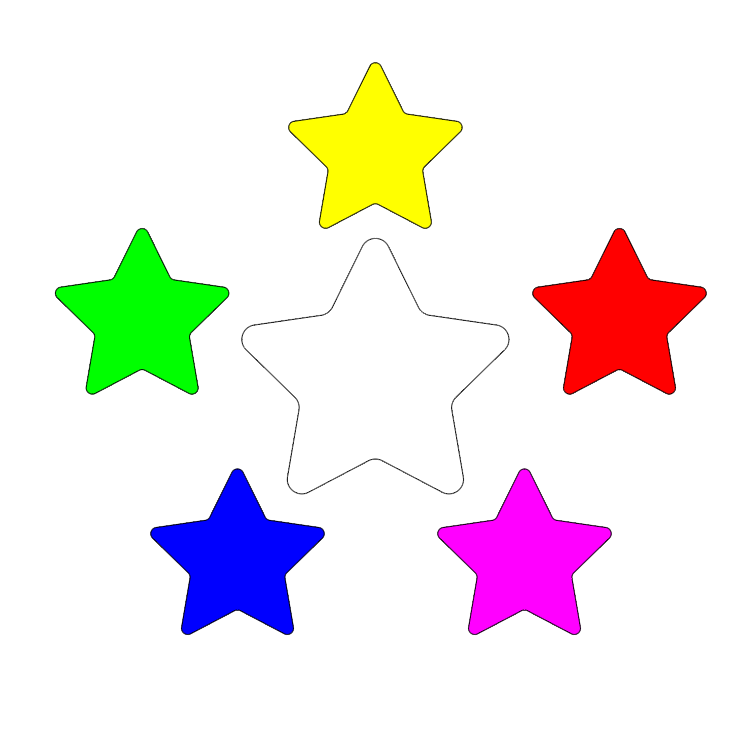
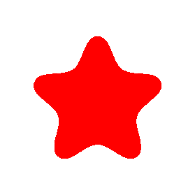

|  | Hjem | Clara Rosenkvist's portofolio |
|---|
|  | Fritids Aktiviteter |
|---|
Jeg har tideligere spillet forskellige sportsgrene i gennem folkeskolen, som inkludere |
|---|
Fodbold |
Dans |
Swømning |
Badminton |
Jeg spiller i øjeblikket ikke nogen sport |
I gennem det meste af mit folkeskole liv har jeg også gået til den lokale spejder. Omkring det tidspunkt jeg gik i 8. klasse hjalp jeg lederen og de andre voksne med at holde øje med de mindre børn. Det gør jeg stadigvæk engang i mellem, når jeg er hjemme hos mine forældre, til det. |